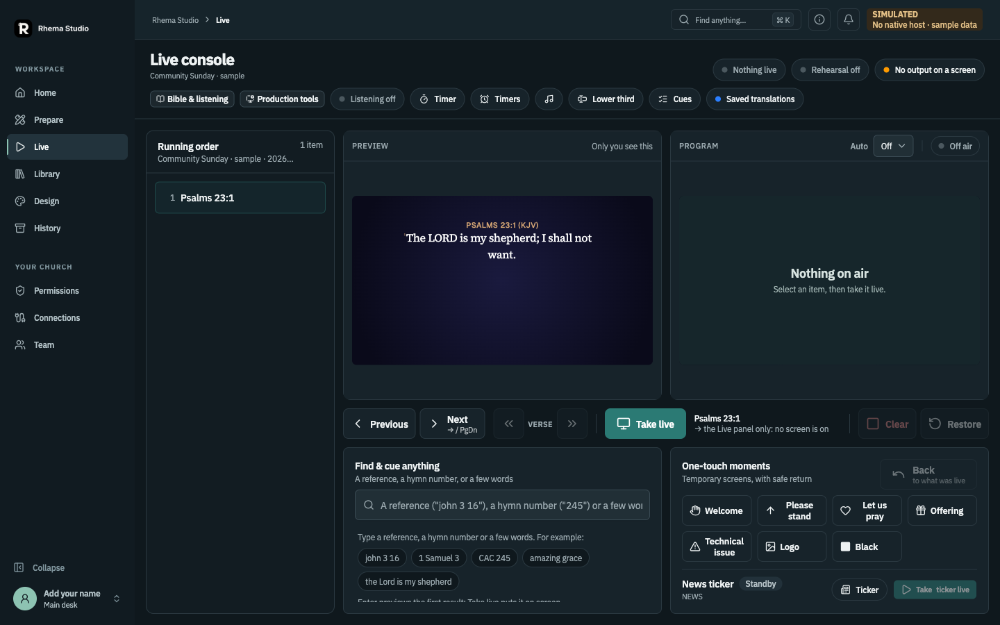

Read the status before relying on a feature. This project is in active development. A screenshot may be a browser-shim capture; an approved design may still lack implementation; source code is not the same as device acceptance.
Start with the basics
Getting startedWhat the app is, how its connected applications fit, and how contributors run it locally.
Core conceptsPrepare, Design, Preview, Program, outputs, and host-governed permissions.
Permissions & accessHost-assigned roles, output scope, read-only defaults, and delegated access.
Operator pagesResponsibilities and limits for each current role.
Connected operatorsWhat LAN access supports today and what the browser role app still needs.
Production guides
RecordingRhema-native recording direction, separate from OBS stream recording.
Comms & timingPrivate team communication, clocks, timers, and Stage messages.
History & run reviewRead a saved service checkpoint and compare planned with journaled event timing.
Devices & companion appsGoogle TV Receiver, Rhema Cam, OBS Companion, MCP, and Engage status.
FAQRelease status, offline behavior, saving, browser roles, and recording.
How this wiki labels status
| Label | Meaning |
|---|---|
| In the repository | Code or a UI surface exists. This alone is not a claim that the whole workflow is accepted. |
| Approved direction | The product behavior has owner approval; implementation and verification may still be incomplete. |
| In development | The integrated feature or role experience is not ready to claim as complete. |
| Acceptance pending | Native, network, receiver, camera, or real-device proof is still outstanding. |

Read the source of truth
- Repository README for source builds and platform setup.
- Feature coverage inventory for approved scope and verified gaps.
- Browser operator contract for LAN access and connected development limits.
- Native recording direction for the selected congregation-output recorder.
These pages summarize the current repository and approved product direction as checked on October 29, 2026. Recheck the linked source before relying on changing implementation details.